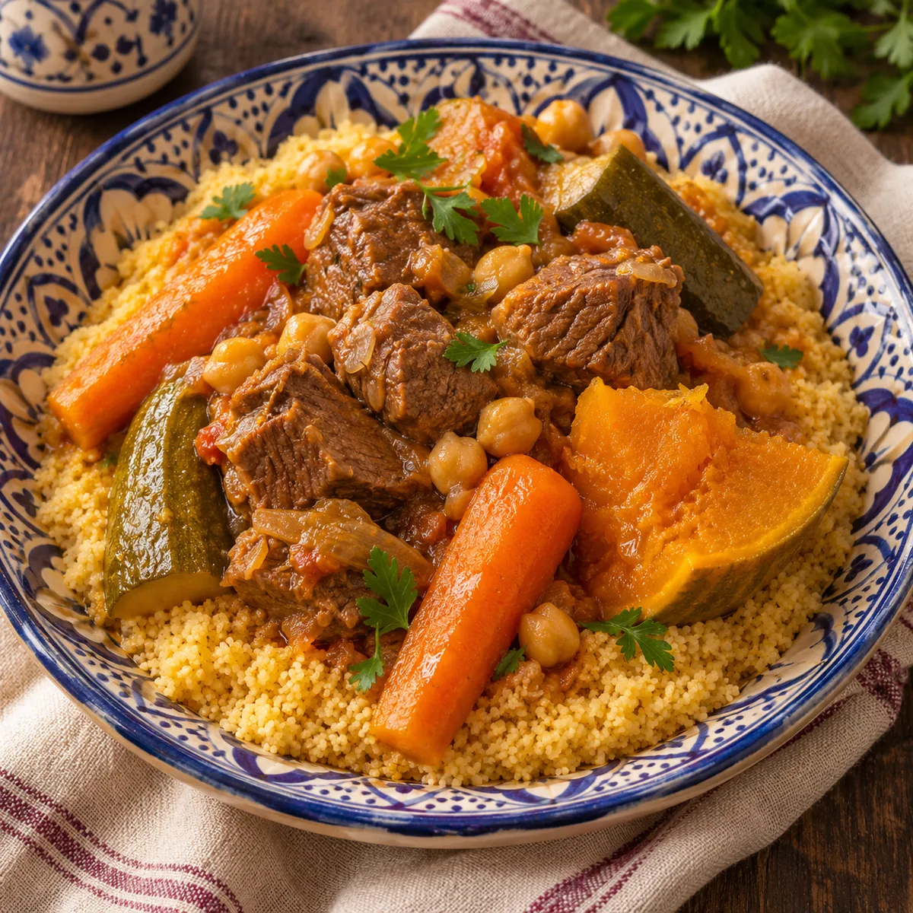

קוסקוס של שבת
קוסקוס עם מרק ירקות ובשר, מתאים לארוחת שישי.
למתכון המטבח שלנו
מתכונים מהמטבח היהודי תוניסאי
המטבח שלנו
מתכונים מהמטבח היהודי תוניסאי

שישה מתכונים פשוטים שאנחנו מכינים בבית, עם רשימת מצרכים וזמני הכנה.

קוסקוס עם מרק ירקות ובשר, מתאים לארוחת שישי.
למתכון
עלה דק ממולא בפירה, טונה וביצה ומטוגן במחבת.
למתכון
עוגה יבשה עם שקדים וצימוקים.
למתכוןבנינו את האתר כדי לרכז במקום אחד כמה מתכונים שאנחנו מכינים הרבה בבית, בלי לחפש כל פעם מחדש כמויות וזמני בישול.
בעמוד עלינו אפשר גם לשמוע הודעה קצרה, לראות מפה ולשלוח לנו מתכונים משלכם.